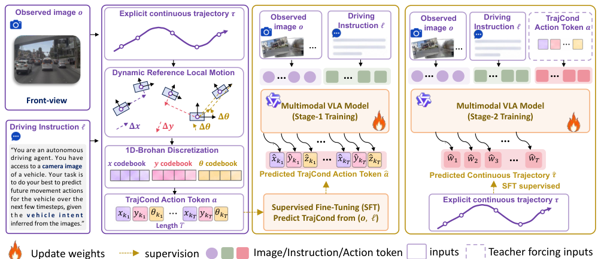
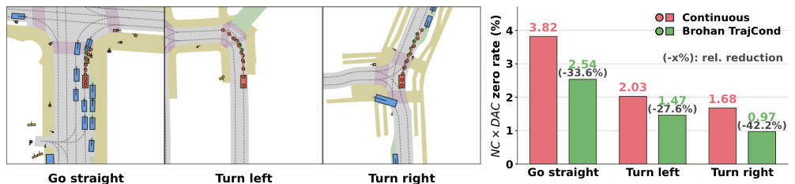

基础摘要
自动驾驶 VLA（视觉—语言—动作）规划器通常让多模态大模型先理解图像与驾驶指令、生成推理，再自回归输出连续轨迹。问题在于，驾驶指令往往描述“让行、保持、转弯”等局部动作，而最终输出却是逐点的自车状态坐标，二者之间存在表示鸿沟；同时，离散动作 token 虽更贴合指令语义，但直接作为最终轨迹输出会引入量化误差，实验中也确实弱于连续轨迹直接回归。为此，作者提出 AutoVLA-D：把离散轨迹作为“轨迹几何条件”（TrajCond），先预测离散动作轨迹，再以其为条件回归最终连续轨迹。具体地，轨迹被转换为相邻时刻的局部坐标系差分运动 (Δx, Δy, Δθ)，并用三个独立的一维 Brohan 码本分别量化，每个 token 只表示单自由度局部运动；训练采用两阶段 SFT：第一阶段用 (o, ℓ) 学习动作 token 序列，第二阶段按 a→w 顺序同时监督动作 token 与连续路点 token，推理时全自回归，NAVSIM 上还可加入 CoT 推理与 GRPO 强化微调。实验覆盖 NAVSIM navtest 非反应式闭环、nuScenes 开环和 NeuroNCAP 闭环；NAVSIM 主模型为 Qwen3-VL-4B，nuScenes/NeuroNCAP 主设置为 Qwen2.5-VL-3B 并另报 Qwen3-VL-4B。AutoVLA-D 在 NAVSIM navtest 取得 92.0 PDMS 与 86.8 EPDMS；nuScenes 上 Qwen2.5-VL-3B 的 ST-P3 指标为 L2 0.30 m、碰撞率 0.10，UniAD 指标为 L2 0.60 m、碰撞率 0.35，Qwen3-VL-4B 的碰撞率进一步降至 0.09/0.29；NeuroNCAP 上 Qwen2.5-VL-3B 得分 3.63、碰撞率 0.36，Qwen3-VL-4B 为 3.23/0.39。消融显示：离散轨迹直接输出弱于连续轨迹，但作为 TrajCond 后稳定增益；NAVSIM 上完整方案由连续基线 88.5 PDMS 提升到 92.0，NC×DAC 失败率在直行/左转/右转分别相对下降 33.6%/27.6%/42.2%。结论是离散轨迹更适合作为连接指令语义与连续规划的中间条件，而非最终输出。局限是额外解码与训练开销，且低频动作 token 可能学习不足；NAVSIM 仅单次运行、无误差棒。
论文结构图


中文完整翻译
AutoVLA-D：从推理中学习用于自动驾驶 VLA 的轨迹几何条件
作者：Yuguang Yang¹,³∗、Zhewen Tan⁸∗、Canyu Chen²,³∗、Linlin Yang⁵、Cheng Chi⁷、Chunyang Liu⁴、Kehua Sheng⁴、Jinyu Yang⁹、Baochang Zhang⁶†、Bo Zhang⁴‡、Yan Wang³‡、Xianbin Cao¹‡
¹ 北京航空航天大学电子信息工程学院；² 北京航空航天大学国家卓越工程师学院；³ 清华大学人工智能产业研究院（AIR）；⁴ 滴滴；⁵ 中国传媒大学媒体融合与传播国家重点实验室；⁶ 北京航空航天大学杭州创新研究院；⁷ 中国人民大学信息学院；⁸ 北京航空航天大学计算机科学与工程学院；⁹ 哈尔滨工业大学（深圳）
∗ 同等贡献：{guangbuaa, chencanyu, tanzhewen}@buaa.edu.cn † 项目负责人 ‡ 通讯作者：xbcao@buaa.edu.cn、zhangbo@didiglobal.com、wangyan@air.tsinghua.edu.cn
第 40 届神经信息处理系统大会（NeurIPS 2026） arXiv:2611.12382v1 [cs.RO] · 2026 年 11 月 9 日
---
摘要
自回归 VLA 规划通常把连续轨迹作为最终输出，但驾驶指令描述的往往是动作而非自车状态，这削弱了对最终连续轨迹的直接条件约束。为填补这一鸿沟，作者提出 TrajCond，即为 VLA 规划引入一种离散的轨迹几何条件。具体而言，TrajCond 被表示为 1D-Brohan 差分动作轨迹，并在最终连续轨迹预测之前通过两阶段训练框架学习。由于模型同时自回归生成离散轨迹与数值轨迹，该方法被命名为 AutoVLA-D（Double）。在 NAVSIM navtest、nuScenes 与 NeuroNCAP 上的实验表明：离散轨迹作为直接输出较弱，但作为 TrajCond 更有效，能在闭环与开环驾驶基准上一致地改善最终连续轨迹预测。代码见 https://github.com/ShivaTeam/AutoVLA-D。
---
1 引言
自回归视觉—语言—动作（VLA）规划已成为一种实用的、以多模态大语言模型（MLLM）为原生范式的自动驾驶方案。给定相机观测与驾驶指令，VLA 规划器遵循现代 MLLM 的下一 token 接口：以视觉—语言输入为条件，产生中间驾驶推理，再解码未来自车轨迹 [22]。近期方法已在这一“输入—推理—轨迹生成”流程上展示了较强的闭环规划能力 [30; 2; 16; 17; 11]。
尽管取得了这些进展，现有 VLA 规划器仍可按最终自车规划所使用的轨迹形式加以区分。一类工作把未来若干秒内的自车状态（包括当前自车坐标系下的相对 x 轴位置、y 轴位置与航向）建模为数值文本路点 token [16; 17; 2]，本文称之为连续轨迹；另一类工作即离散轨迹，把逐步自车运动或状态转移表示为离散动作 token [25; 11; 30]。这两类轨迹形式各有互补的优势与局限。动作 token 在离散化连续轨迹时引入重建误差；作者在多种离散化策略（如 K-Means、K-Disks [30; 25; 20] 以及 Brohan 式离散化 [31]）上的实验表明，直接回归离散轨迹始终弱于直接回归连续轨迹。然而，驾驶指令常常描述让行、保持或转弯等动作，这类局部运动变化天然与离散轨迹 token 对齐，因为每个动作 token 都描述一次局部状态转移。当指令被直接映射到最终连续轨迹时，便产生了表示形式上的鸿沟。
为解决该问题，作者提出 AutoVLA-D（Double），一种两阶段 VLA 规划器：在回归最终连续轨迹之前，先把离散轨迹作为轨迹几何条件（Trajectory-geometric Condition，TrajCond）。该方法有三项核心创新：
- 以离散轨迹作为轨迹几何条件。 TrajCond 先预测离散轨迹，再将其几何—语义作为最终连续预测的条件。这样既让最终输出保留在更强的连续空间，又利用离散条件传递面向动作的信息。
- 采用 1D-Brohan 离散化的动作 token。 从自车差分运动中构造 TrajCond，并用彼此独立的 Brohan 式码本分别离散 x、y 与 yaw 差分。与 K-Means、K-Disks [30; 25; 20] 等共享码本聚类 tokenizer 相比，该设计在所测试的 TrajCond 结果中最强，重建误差也最低。
- 两阶段对齐训练。 通过离散化真值轨迹构造 Brohan TrajCond 后，新建的动作词表没有任何与 VLA 任务相关的初始化。因此第一阶段先用“观测与指令 ↔ 编码 TrajCond 的动作 token 序列”对齐，以预热 TrajCond 的语义；第二阶段利用解码后的 TrajCond 与可用推理上下文回归最终连续轨迹。这样把条件学习与最终轨迹预测分离开来。
作者在 NAVSIM navtest、nuScenes 与 NeuroNCAP 上评估 AutoVLA-D。AutoVLA-D 在这些设置中取得最先进结果，包括 NAVSIM navtest 上的 92.0 PDMS 与 86.8 EPDMS。除基准比较外，实验还围绕“轨迹形式为何以及如何影响驾驶 VLA”展开：在 TrajCond 消融与渐进分析中考察 AutoVLA-D 的分阶段性能增益，并验证训练与推理各组件的贡献；在 TrajCond 形式分析中比较连续轨迹与不同动作 token 形式，表明离散轨迹作为最终自回归输出较弱，但作为 TrajCond 用于最终连续预测时更有效；在 TrajCond 语义分析中，定性与定量验证 TrajCond 是否除了提供几何引导，还吸收了面向动作的规划语义。综合来看，这些实验表明：在自回归 VLA 中，作为 TrajCond 使用的离散轨迹既能编码指令语义，又能保留轨迹几何，从而缩小指令与连续轨迹之间的表示鸿沟并提升 VLA 规划性能。
---
2 相关工作
自动驾驶 VLA。 自动驾驶规划最初通过端到端系统发展起来，这类系统把传感器观测映射为未来轨迹，包括 ST-P3 [6]、VAD [9]、UniAD [7]、DiffusionDrive [13]、SparseDrive [24] 与 BridgeAD [28]。随着视觉—语言模型（VLM）的出现，近期 VLA 方法利用视觉—语义知识进行驾驶理解、推理与规划，主要遵循两种模式：规划器式方法（包括 ReCogDrive [12]、ImagiDrive-S [10]、DriveVLA-W0 [11] 与 FLARE [26]）把 VLM 用作特征提取器或语义推理器，并配合外部规划器或动作头；自回归方法（包括 EMMA [8]、OpenEMMA [27]、OpenDriveVLA [29]、Impromptu VLA [3]、AutoVLA [30]、AdaThinkDrive [16]、Curious-VLA [2] 与 ELF-VLA [17]）通过下一 token 接口预测路点或动作 token 序列。与推理后直接解码最终轨迹的自回归 VLA 不同，AutoVLA-D 在最终连续轨迹生成之前插入一个学习得到的轨迹几何条件。
自回归 VLA 中的轨迹形式。 自回归 VLA 规划器用三个自由度表示未来自车轨迹：x 轴位置、y 轴位置与航向。现有轨迹形式可分为两类。连续轨迹方法（包括 Impromptu VLA [3]、AdaThinkDrive [16]、Curious-VLA [2] 与 ELF-VLA [17]）把每个未来自车状态序列化为数值文本路点 token；其中 Curious-VLA [2] 进一步通过逐步轨迹归一化提升性能。离散轨迹方法则把每次局部自车状态转移序列化为动作 token，并通过时间积分恢复未来轨迹。AutoVLA [30] 构建 K-Means/K-Disks 式动作码本，其 token 表示 3 自由度局部运动 [25; 20]；DriveVLA-W0 [11] 使用基于频率的 FAST tokenization [19]。AutoVLA-D 的不同之处在于把离散轨迹用作轨迹几何条件而非最终输出，并采用 1D-Brohan 形式，使每个动作 token 表示 1 自由度局部运动。
---
3 方法
3.1 预备知识与问题形式化
任务形式化。 给定观测图像 $o$ 与语言用户指令 $\ell$，传统 VLA 规划器直接预测最终未来轨迹：
$$ \tau = f_{\mathrm{VLA}}(o,\ell), \tag{1} $$
本文中最终预测目标 $\tau$ 始终是连续轨迹，为进行自回归解码而表示为归一化文本路点序列 $\{\tilde{\tau}_t\}_{t=1}^{T}$。因此，这种直接形式要求模型自回归地把语言指令映射到最终连续轨迹。
如图 1 所示，AutoVLA-D 引入了一个显式的中间轨迹几何条件。令 $a=\{a_t\}_{t=1}^{T}$ 表示编码该条件的动作 token 序列。与最终输出轨迹不同，TrajCond 是离散的。作者不是把 $\ell$ 直接映射到最终连续轨迹 $\tau$，而是通过两个监督阶段训练同一个 VLA 模型：
$$ a=f_{\mathrm{VLA}}^{(1)}(o,\ell),\qquad \tau=f_{\mathrm{VLA}}^{(2)}(o,\ell,a),\qquad f_{\mathrm{VLA}}^{(2)}\leftarrow f_{\mathrm{VLA}}^{(1)}. \tag{2} $$
其中上标表示训练阶段而非独立架构；$f_{\mathrm{VLA}}^{(2)}\leftarrow f_{\mathrm{VLA}}^{(1)}$ 表示第二阶段模型由第一阶段模型初始化后继续训练。两个阶段都使用 MLLM 的自回归 token 解码器：第一阶段从 $(o,\ell)$ 预测 TrajCond 动作 token，第二阶段从 $(o,\ell,a)$ 预测最终连续路点 token。
图 1：AutoVLA-D 总体流程（图见“论文结构图”）。 左侧将观测图像与驾驶指令输入 VLA；中间把显式连续轨迹经动态参考局部运动转换为局部差分 $(\Delta x,\Delta y,\Delta\theta)$，再由 $x$、$y$、$\theta$ 三个一维 Brohan 码本离散为 TrajCond 动作 token；右侧为两阶段训练：第一阶段从 $(o,\ell)$ 预测 TrajCond token，第二阶段在给定 $(o,\ell,a)$ 的条件下预测最终连续轨迹。训练时对动作 token 使用教师强制，推理时先自回归生成 TrajCond，再生成连续轨迹。
连续轨迹预备知识。 给定观测图像 $o$ 与语言用户指令 $\ell$，模型预测未来自车轨迹 $\tau=\{(x_t,y_t,\theta_t)\}_{t=1}^{T}$。参照 Curious-VLA [2]，最终连续轨迹被序列化为归一化文本路点。具体而言，令 $\tau_t=(x_t,y_t,\theta_t)$ 表示第 $t$ 步的轨迹状态，采用逐步归一化表示：
$$ \tilde{\tau}_t=\frac{\tau_t-\mu_t}{\sigma_t},\qquad \hat{\tau}_t=\tilde{\tau}_t\,\sigma_t+\mu_t, \tag{3} $$
其中 $(\mu_t,\sigma_t)$ 是由训练集估计的逐步统计量。作者用 TrajCond 在面向动作的指令与连续自车状态输出之间架桥。
上下文预备知识。 对所有数据集，$\ell$ 都表示语言用户指令。对 NAVSIM，作者额外使用 Qwen3-VL-235B 从前视图图像、高层意图、过去自车轨迹与专家未来轨迹中标注思维链（CoT）推理。参照既有 VLA 推理实践 [22]，标注包含三个字段：关键对象与条件、对专家轨迹的自然语言解释、速度/命令元行为标签。CoT 序列可视为式 (2) 中与 $\ell$ 相关联的扩展项，但它不作为输入提供；相反，模型被训练来回归它，作为额外的语言监督。完整标注提示词以及各数据集的第一/第二阶段用户提示词见附录 C。nuScenes 与 NeuroNCAP 不使用 CoT 标注。为公平比较，NAVSIM 与 nuScenes 上的 $o$ 使用单张前视图图像，NeuroNCAP 上使用左—前—右三视图图像。
3.2 通过动作 token 构造轨迹几何条件
有用的 TrajCond 应能由离散 token 预测，同时保留足够几何信息来引导连续规划。因此，作者从轨迹差分构造 TrajCond；差分既保留局部运动变化，又允许使用紧凑的离散词表。
动作 tokenizer。 轨迹 $\tau=\{(x_t,y_t,\theta_t)\}_{t=1}^{T}$ 表示在 $t=0$ 时刻的自车坐标系中。与依赖静态坐标系的已有工作 [30; 11] 不同，为描述从第 $t-1$ 步到第 $t$ 步的运动，作者使用第 $t-1$ 步的局部坐标系，并通过标准平面旋转变换计算差分运动 [18]。附录图 6 展示了这种局部坐标系差分构造：
$$ \delta_t=(\Delta x_t,\Delta y_t,\Delta\theta_t),\qquad \Delta\theta_t=\theta_t-\theta_{t-1}, $$
$$ \begin{bmatrix}\Delta x_t\\ \Delta y_t\end{bmatrix} =R(-\theta_{t-1}) \begin{bmatrix}x_t-x_{t-1}\\ y_t-y_{t-1}\end{bmatrix}, \qquad R(\theta)= \begin{bmatrix}\cos\theta&-\sin\theta\\ \sin\theta&\cos\theta\end{bmatrix}. \tag{4} $$
令 $\Delta\tau=\{\delta_t\}_{t=1}^{T}$ 表示差分轨迹。参照既有动作 token 实践 [30; 25; 20]，作者从训练轨迹中提取差分动作并构建动作模板集合。现有动作模板提取方法通常用 K-Means 或 K-Disks 把联合 3 自由度运动向量 $(\Delta x,\Delta y,\Delta\theta)$ 聚类为一个大小为 $Q$ 的共享码本。在本文分析中，这称为 3D 共享码本形式，因为每个时间步由一个编码 3 自由度局部运动的动作 token 表示。
相比之下，作者在 4.4 节发现，基于聚类的 K-Means/K-Disks tokenizer 会产生明显的训练—测试重建误差差距。因此最终设置遵循 RT-2 [31] 使用的逐维线性离散化策略。对每个动作维度 $i\in\{1,2,3\}$（分别对应 x、y 与 θ），在训练集上计算第 1 与第 99 百分位数，并把该区间均匀划分为 $Q_i$ 个 bin。动作 token 码本总大小为 $Q=\sum_{i=1}^{3}Q_i$。由此得到 x、y、θ 三个码本，每个运动维度一个，即 1D-Brohan 形式：单个动作 token 表示 1 自由度局部运动，而同一时间步的三个 token 共同描述一次 3 自由度局部转移。
轨迹离散化。 参照 [20; 30; 25]，作者迭代寻找与下一状态之间角点距离最小的 token。在最终的 1D-Brohan 设置中，候选元组 $k=(k_1,k_2,k_3)$ 从每个动作码本中各选择一个 bin 中心：
$$ \bar{\delta}(k)=(x_{k_1},y_{k_2},\theta_{k_3}),\qquad k_i\in\{1,\ldots,Q_i\}. \tag{5} $$
从当前自车位姿 $\hat{\tau}_0=(0,0,0)$ 开始，由前一个已 token 化位姿 $\hat{\tau}_{t-1}$ 渲染每个候选：
$$ \begin{bmatrix}\bar{x}_t(k)\\ \bar{y}_t(k)\end{bmatrix} = \begin{bmatrix}\hat{x}_{t-1}\\ \hat{y}_{t-1}\end{bmatrix} +R(\hat{\theta}_{t-1}) \begin{bmatrix}x_{k_1}\\ y_{k_2}\end{bmatrix}, \qquad \bar{\theta}_t(k)=\hat{\theta}_{t-1}+\theta_{k_3}. \tag{6} $$
第 $t$ 步的最佳候选元组通过比较渲染候选状态与真值下一状态来选取：
$$ k_t^*=\arg\min_{k}\, d_{\mathrm{corner}}\!\left((\bar{x}_t(k),\bar{y}_t(k),\bar{\theta}_t(k)),\, (x_t,y_t,\theta_t)\right), \tag{7} $$
其中 $d_{\mathrm{corner}}$ 是有序检测框角点之间的平均距离。动作 token 元组为 $a_t=k_t^*$。迭代该过程得到完整离散动作序列 $a=\{a_t\}_{t=1}^{T}$。由于三个一维码本对应不同自由度，若穷举元组搜索，每一步需要 $Q_i^3$ 个候选。因此作者先为每个自由度取逐维绝对残差最小的四个 token，枚举所得的 $4\times4\times4$ 个候选元组，再选择角点误差最小的元组。该设计把连续轨迹转换为一系列局部动作分量；附录 D 给出完整过程的可视化与伪代码。
3.3 AutoVLA-D 的训练与推理
本节详述 3.1 节任务形式化中描述的训练与推理过程。
第一阶段的推理与训练。 新建的动作词表没有与 VLA 任务相关的初始化，因此第一阶段以多模态视觉—语言上下文 $(o,\ell)$ 为输入、输出动作 token 序列 $a$，以预热 TrajCond 的语义。该阶段用监督微调（SFT）和自回归 token 损失训练：
$$ \mathcal{L}_{\mathrm{stage1}} =-\sum_{t=1}^{T}\log P(a_t\mid o,\ell,a_{ 第一阶段不用于直接产生最终轨迹；它学习作为轨迹几何条件、用于引导第二阶段的 TrajCond。 第二阶段的推理与训练。 该阶段模型学习利用 TrajCond $a$ 以及视觉—语言指令上下文 $(o,\ell)$ 回归目标连续轨迹。令 $w=\{w_t\}_{t=1}^{T}$ 表示目标连续轨迹对应的 token 序列。第二阶段以相同的多模态上下文 $(o,\ell)$ 为输入，并遵循输出顺序 $a\rightarrow w$。该阶段用 SFT 训练，目标结合动作 token 损失与最终路点 token 损失： $$ \mathcal{L}_{\mathrm{stage2}} =-\sum_{t=1}^{T}\log P(a_t\mid o,\ell,a_{ -\sum_{t=1}^{T}\log P(w_t\mid o,\ell,a,w_{ 第二阶段优化包含 TrajCond 动作 token 与最终轨迹 token 的完整有序输出序列。如图 1 虚线框所示，作者采用教师强制策略：训练时动作 token 由真值轨迹监督；推理时完全自回归，即先预测 TrajCond 动作轨迹，再预测最终连续轨迹。 推理与 RFT。 对 NAVSIM，作者额外使用 3.1 节上下文预备知识中描述的 CoT 推理。令 $r$ 表示 CoT 推理 token；输出顺序在第一阶段变为 $r\rightarrow a$，在第二阶段变为 $a\rightarrow r\rightarrow w$。参照 Curious-VLA [2]，作者增加第三训练阶段，输出格式为 $a\rightarrow r\rightarrow w$，并使用 GRPO [23] 进行强化微调（RFT）。为公平比较，nuScenes 与 NeuroNCAP 只使用第一/第二阶段的 SFT 训练，不含 CoT 推理。 如图 3 的轨迹表示分析所支持的那样，直接预测离散轨迹弱于预测最终连续轨迹，但把离散轨迹用作 TrajCond 会增强最终规划器。因此，两阶段设计既保留连续输出空间的强度，又利用 TrajCond 的对齐优势。 --- 4.2 节报告 NAVSIM navtest、nuScenes 与 NeuroNCAP 上的性能；4.3 节进行 TrajCond 消融与渐进分析；4.4 节比较不同 TrajCond 形式，并验证 TrajCond 与不同离散轨迹 tokenizer 的兼容性；4.5 节对 TrajCond 进行语义分析。 数据集与基准设置。 作者报告 NAVSIM navtest [4; 2]（大规模非反应式闭环仿真基准）、nuScenes [1]（开环真实世界驾驶基准）与 NeuroNCAP [14]（构建于 nuScenes 之上的照片级闭环仿真器）上的结果。为公平比较，NAVSIM navtest 按 ReCogDrive [12] 报告，nuScenes 按 Impromptu VLA [3] 报告，NeuroNCAP 按 ImagiDrive [10] 报告。更多基准细节见附录 B。 训练设置。 NAVSIM 与表示消融实验默认使用 Qwen3-VL-4B，除非另有说明。nuScenes 与 NeuroNCAP 报告 Qwen2.5-VL 与 Qwen3-VL 两种变体。训练由 SFT 与可选的 RFT 组成。SFT 用 LLaMA-Factory 实现，RFT 用 EasyR1 实现。优化器为 AdamW [15]，权重衰减 0.05，预热比例 0.10，余弦学习率调度，全局批大小 32。第一阶段与第二阶段各训练 3 个 epoch，学习率 $4\times10^{-5}$。RFT 使用 GRPO 训练 160 步，actor 批大小 512，与 Curious-VLA（Chen et al., 2026）大体一致。NeuroNCAP、NAVSIM 与 nuScenes 的模型上下文设置见 3.1 节上下文预备知识。 轨迹形式。 除非另有说明，连续轨迹指默认最终轨迹形式，即归一化文本路点；TrajCond 指由 1D-Brohan $Q=768$ 码本编码的离散轨迹，其中每个自由度的码本有 $Q_i=256$ 个 bin。作者在 4.4 节比较不同码本大小设置后选择 $Q=768$。 NAVSIM navtest PDMS 结果。 表 1 报告 NAVSIM navtest 比较。对比方法包括 VLA 规划器方法 ImagiDrive-S（Li et al., 2025）、ReCogDrive（Li et al., 2025）与 DriveVLA-W0（Li et al., 2025），以及 VLA token 方法 AutoVLA（Zhou et al., 2025）、AdaThinkDrive（Luo et al., 2025）、Curious-VLA（Chen et al., 2026）与 FLARE（Xie et al., 2026）。附加基线见附录表 7。本文 NAVSIM 设置使用前视图输入、reason 数据与可选 GRPO [23]。实验结果表明，AutoVLA-D 达到 92.0 PDMS，超过此前 VLA 规划器报告的成绩。 表 1：公开指标设置下的 NAVSIM navtest PDMS 结果。 † 表示作者复现的结果，∗ 表示同期工作。 | 方法 | 基础模型 | NC↑ | DAC↑ | EP↑ | TTC↑ | C↑ | PDMS↑ | |---|---|---:|---:|---:|---:|---:|---:| | ImagiDrive-S | InternVL2.5-4B | 98.6 | 96.2 | 80.5 | 94.5 | 100.0 | 87.4 | | ReCogDrive | InternVL3-8B | 98.2 | 97.8 | 83.5 | 95.2 | 100.0 | 89.6 | | ReCogDrive† | Qwen3-VL-4B | 98.2 | 97.7 | 86.0 | 97.7 | 100.0 | 90.7 | | DriveVLA-W0 | Emu3-8B | 98.7 | 99.1 | 83.3 | 95.3 | 99.3 | 90.2 | | AutoVLA | Qwen2.5-VL-3B | 98.4 | 95.6 | 81.9 | 98.0 | 99.9 | 89.1 | | AdaThinkDrive | InternVL3-8B | 98.4 | 97.8 | 84.4 | 95.2 | 100.0 | 90.3 | | Curious-VLA | Qwen2.5-VL-3B | 98.4 | 96.9 | 88.5 | 97.9 | 98.1 | 90.3 | | Curious-VLA† | Qwen3-VL-4B | 98.5 | 96.7 | 87.3 | 98.0 | 98.3 | 89.7 | | FLARE∗ | Qwen3-VL-4B | 98.5 | 98.4 | 86.0 | 96.0 | 100.0 | 91.4 | | Ours | Qwen3-VL-4B | 98.8 | 97.7 | 89.8 | 97.7 | 99.8 | 92.0 | NAVSIM navtest EPDMS 结果。 表 2 在同一基准上按更严格的 EPDMS 指标集报告结果。对比方法包括 ReCogDrive（Li et al., 2025）、DiffusionDrive（Liao et al., 2025）、DriveVLA-W0（Li et al., 2025）、Curious-VLA（Chen et al., 2026）与 FLARE（Xie et al., 2026）；附加端到端（E2E）基线见附录表 8。在该设置下，AutoVLA-D 达到 86.8 EPDMS，优于 Curious-VLA（Chen et al., 2026）报告的 85.3。 表 2：遵循官方 EPDMS 协议的 NAVSIM navtest EPDMS 结果。 AutoVLA-D 使用与 PDMS 实验相同的单相机设置，并报告完整的 EPDMS 评估。† 表示作者复现的结果，∗ 表示同期工作。EPDMS 指 NAVSIM v2 官方仓库发布的修复后 EPDMS 指标。 | 方法 | 基础模型 | NC↑ | DAC↑ | DDC↑ | TLC↑ | EP↑ | TTC↑ | LK↑ | C↑ | EC↑ | EPDMS↑ | |---|---|---:|---:|---:|---:|---:|---:|---:|---:|---:|---:| | ReCogDrive | InternVL3-8B | 98.3 | 95.2 | 99.5 | 99.8 | 87.1 | 97.5 | 96.6 | 98.3 | 86.5 | 83.6 | | DiffusionDrive | – | 98.2 | 95.9 | 99.4 | 99.8 | 87.5 | 97.3 | 96.8 | 98.3 | 87.7 | 84.5 | | Curious-VLA | Qwen2.5-VL-3B | 98.4 | 96.9 | 99.2 | 99.8 | 88.5 | 97.9 | 96.9 | 98.1 | 81.5 | 85.3 | | Curious-VLA† | Qwen3-VL-4B | 98.5 | 96.7 | 99.37 | 99.9 | 87.3 | 98.0 | 96.5 | 98.3 | 83.0 | 84.9 | | DriveVLA-W0 | Emu3-8B | 98.5 | 99.1 | 98.0 | 99.7 | 86.4 | 98.1 | 93.2 | 97.9 | 58.9 | 86.1 | | FLARE∗ | Qwen3-VL-4B | 98.8 | 96.6 | 99.5 | 99.9 | 87.9 | 98.2 | 95.8 | 98.4 | 87.5 | 86.3 | | Ours | Qwen3-VL-4B | 98.8 | 97.7 | 98.8 | 99.8 | 91.2 | 98.2 | 96.9 | 98.2 | 80.2 | 86.8 | nuScenes 开环比较。 表 3 报告 nuScenes 开环比较，对比 ST-P3（Hu et al., 2022）、VAD（Jiang et al., 2023）、UniAD（Hu et al., 2023）、EMMA（Hwang et al., 2024）、OpenEMMA（Xing et al., 2025）、OpenDriveVLA（Zhou et al., 2025）、AutoVLA（Zhou et al., 2025）与 Impromptu VLA（Chi et al., 2025）。Qwen2.5-VL 行是主要设置，灰色 Qwen3-VL 行用于分离骨干网络与 TrajCond 消融。值得注意的是，nuScenes 上的 L2 误差在现有方法之间已接近饱和，约 0.30 m，而碰撞率提供了更具区分度的度量。 表 3：nuScenes 开环比较。 报告 L2 误差与碰撞率（Col.）。灰色行表示作者去除 TrajCond（TC）的消融。 | 方法 | 基础模型 | ST-P3 指标 L2↓ | ST-P3 指标 Col.↓ | UniAD 指标 L2↓ | UniAD 指标 Col.↓ | |---|---|---:|---:|---:|---:| | ST-P3 | – | 2.11 | 0.71 | – | – | | VAD | – | 0.37 | 0.14 | – | – | | UniAD | – | 0.69 | 0.12 | 1.03 | 0.31 | | EMMA | Gemini | 0.32 | – | – | – | | OpenEMMA | Qwen2-VL-7B | 2.81 | – | – | – | | OpenDriveVLA | Qwen2.5-VL-3B | 0.33 | 0.10 | 0.67 | 0.30 | | AutoVLA | Qwen2.5-VL-3B | 0.48 | 0.13 | 0.86 | 0.35 | | Impromptu VLA | Qwen2.5-VL-3B | 0.33 | 0.13 | 0.67 | 0.38 | | Ours | Qwen2.5-VL-3B | 0.30 | 0.10 | 0.60 | 0.35 | | Ours（去 TC） | Qwen3-VL-4B | 0.30 | 0.11 | 0.60 | 0.34 | | Ours | Qwen3-VL-4B | 0.30 | 0.09 | 0.60 | 0.29 | NeuroNCAP 闭环比较。 表 4 使用 NeuroNCAP Score 与碰撞率报告 NeuroNCAP 闭环比较。对比方法包括 UniAD（Hu et al., 2023）、VAD（Jiang et al., 2023）、BridgeAD（Zhang et al., 2025）、ImagiDrive-S（Li et al., 2025）与 Impromptu VLA（Chi et al., 2025），以及表中列出的附加 E2E 行。Qwen2.5-VL AutoVLA-D 行是主要设置；灰色行表明去除 TrajCond 或更换骨干网络会削弱结果。 表 4：NeuroNCAP 闭环比较。 灰色行表示作者去除 TrajCond（TC）的消融。 | 方法 | 基础模型 | 得分 Avg.↑ | 得分 Stat.↑ | 得分 Frontal↑ | 得分 Side↑ | 碰撞率 Avg.↓ | 碰撞率 Stat.↓ | 碰撞率 Frontal↓ | 碰撞率 Side↓ | |---|---|---:|---:|---:|---:|---:|---:|---:|---:| | UniAD | – | 0.73 | 0.84 | 0.10 | 1.26 | 0.89 | 0.88 | 0.98 | 0.80 | | VAD | – | 0.66 | 0.47 | 0.04 | 1.45 | 0.93 | 0.96 | 1.00 | 0.82 | | SparseDrive | – | 0.92 | – | – | – | 0.94 | – | – | – | | BridgeAD-S | – | 1.52 | – | – | – | 0.76 | – | – | – | | BridgeAD-B | – | 1.60 | – | – | – | 0.73 | – | – | – | | ImagiDrive-S | InternVL2.5-4B | 3.49 | 4.15 | 2.45 | 3.88 | 0.45 | 0.34 | 0.74 | 0.27 | | Impromptu VLA | Qwen2.5-VL-3B | 2.15 | 1.77 | 2.31 | 2.10 | 0.66 | 0.70 | 0.59 | 0.65 | | Ours（去 TC） | Qwen2.5-VL-3B | 2.76 | 2.95 | 2.98 | 2.35 | 0.49 | 0.43 | 0.48 | 0.56 | | Ours | Qwen2.5-VL-3B | 3.63 | 4.02 | 3.43 | 3.44 | 0.36 | 0.26 | 0.44 | 0.36 | | Ours（去 TC） | Qwen3-VL-4B | 1.66 | 1.81 | 1.06 | 1.66 | 0.68 | 0.69 | 0.82 | 0.68 | | Ours | Qwen3-VL-4B | 3.23 | 3.17 | 3.68 | 2.86 | 0.39 | 0.41 | 0.32 | 0.44 | NAVSIM 上的渐进分析。 表 5 追踪从连续轨迹回归到完整 AutoVLA-D 方案的改进路径。单阶段 Brohan TrajCond 已优于直接连续基线（C < B-TC(1)）；把过程分成两个阶段还能进一步提升（B-TC(1) < B-TC），因为 TrajCond 应先吸收面向动作的语义，再被用作最终连续轨迹预测的条件。该进程也说明：Brohan 作为直接输出目标较弱（B < C），但作为中间条件更强（B < C < B-TC），表明 AutoVLA-D 的增益并非来自蒸馏离散轨迹，而来自把离散轨迹用作条件。 表 5：Qwen3-VL-4B 在 NAVSIM 上的渐进性能提升。 将 Reason、Continuous、Brohan 与 epochs 分别缩写为 R、C、B 与 ep.。右侧面板报告相应的 EPDMS/PDMS 分数。 | 方法 | 第一阶段 | 第二阶段 | RFT | |---|---|---|---| | 含推理（R）的仅 SFT 结果 | | | | | Continuous (C) | R → C (6 ep.) | – | – | | Continuous TrajCond | R → C (3 ep.) | C → R → C (3 ep.) | – | | Brohan (B) | R → B (6 ep.) | – | – | | Brohan TrajCond (1) | – | B → R → C (6 ep.) | – | | Brohan TrajCond | R → B (3 ep.) | B → R → C (3 ep.) | – | | SFT + RFT（GRPO）结果，含推理（R） | | | | | Continuous + RFT | R → C (6 ep.) | – | ✓ | | Brohan TrajCond + RFT | R → B (3 ep.) | B → R → C (3 ep.) | ✓ | 右侧面板对应的 EPDMS/PDMS 数值为：B 82.4/86.8，C 83.9/88.5，B-TC(1) 84.0/89.2，B-TC 85.6/90.8，C+RFT 84.9/89.7，B-TC+RFT 86.8/92.0。增益路径标注为 B nuScenes/NeuroNCAP 上的 TrajCond 消融。 完整比较进一步在 NAVSIM 之外验证 AutoVLA-D。在仅 SFT 的 nuScenes 设置中，无论采用 ST-P3 还是 UniAD 指标，TrajCond 都相对去 TC 变体改善了开环规划。在 NeuroNCAP 上，TrajCond 也提升了闭环安全性并减少了碰撞。这支持 TrajCond 并非 NAVSIM 专属现象。 归因分析。 闭环结果表明，TrajCond 最明显地改善了碰撞相关行为。除 TrajCond 外，作者的技术路线也接近 Curious-VLA [2]；与该基线相比，主要增益来自碰撞率下降。因此作者在图 2 中进一步分析 NAVSIM 碰撞相关指标。该图聚焦无碰撞（NC）与可行驶区域合规（DAC），展示了高层元行为已经正确、但 TrajCond 产生更准确局部控制并避免易碰撞运动的代表性案例。表 3 与表 4 的消融行在 nuScenes 与 NeuroNCAP 上显示一致趋势，表明 TrajCond 改善的是安全关键的自身控制，而不只是路线推进。 图 2：NAVSIM navtest 上的碰撞相关示例与失败 NC×DAC 乘积率（图见“论文结构图”）。 左侧三幅图分别对应直行、左转、右转三种高层意图下的典型碰撞场景；右侧柱状图比较 Continuous 基线与 Brohan TrajCond 的 NC×DAC 零值率：直行由 3.82% 降至 2.54%（相对下降 33.6%），左转由 2.03% 降至 1.47%（下降 27.6%），右转由 1.68% 降至 0.97%（下降 42.2%）。完整 NC/DAC/乘积计数见附录表 14。 离散化误差与泛化。 参照 Trajeglish [20]，作者测量把连续轨迹离散为动作 token 所引入的重建误差。图 3/附录图 8 显示：当 $Q=384\rightarrow768\rightarrow1536$ 时，码本越大，重建误差越低；1D-Brohan 始终给出最小的重建误差，且训练—测试差距小于基于聚类的码本；附录表 11 量化了同样的变化。 TrajCond 作为最终预测。 当离散表示被用作直接自回归输出目标时，它们都仍弱于连续文本路点（图 3 中灰色柱对蓝色/黄色/绿色柱），即使 Brohan 给出最好的离散结果。K-Means/K-Disks 的比较还表明，规划性能并不只由 oracle 重建误差决定。 TrajCond 形式消融。 作者进一步把码本大小 768 的表示作为轨迹格式语义条件进行评估。在图 3 中，三种离散 tokenizer 用作 TrajCond 时都强得多，而把连续轨迹用作条件只带来有限增益。这确认动作 token 最适合作为中间接口，而不是替代最终连续预测。由于 1D-Brohan 同时具有最低重建误差与最佳 TrajCond 分数，作者将其用作默认表示。 图 3：动作 token 的 TrajCond 形式分析。 每个码本大小分组把重建误差曲线与对应的 EPDMS/PDMS 柱配对。左轴报告轨迹重建误差，右轴报告 EPDMS/PDMS。受篇幅限制，码本大小 384 的结果移至附录图 8。 推理依赖与困惑度分析。 Pause token 遵循 Goyal et al. [5]，只作为保持结构的占位符，即用 [PAUSE] 代理 token 替换有意义内容。 （I）表 6 左半部分检验 TrajCond 是否真正学习语义，而不只是充当几何辅助信号。第一阶段比较已经支持这一点：去除 TrajCond 并退回连续回归会降低性能（B-TC > B-TC w/o TrajCond）。随后保持相同的两阶段 SFT 配方，但删除第二阶段的文本 reason，并用 pause token 替换，使第二阶段预测必须依赖 TrajCond，而不是再次读取显式推理文本。由此得到的增益（B-TC < B-TC w/o R）表明：一旦推理语义被吸收进 TrajCond，轨迹结构化条件能比在第二阶段再次注入 reason 文本提供更干净的引导。 （II）表 6 右半部分提供互补的解码视角。在 nuScenes 上，用 pause token 替换动作 token 会增加最终连续轨迹的困惑度。在 NAVSIM 第二阶段，用 pause token 替换动作 token 或推理都会增加困惑度，其中替换推理造成的退化最大。在 NAVSIM 第一阶段，用 pause token 替换推理同样会增加 TrajCond 预测自身的困惑度。结合推理依赖消融，这些结果表明 TrajCond 与推理都降低轨迹解码的不确定性，而 TrajCond 是语义有意义的轨迹几何条件，而非纯几何辅助信号。 （III）C-TC < B-TC 证明增益不是来自更长的输出/辅助损失，而是来自 Brohan 动作 token 的语义性质。 （IV）RFT 结果进一步阐明 TrajCond 在两个 SFT 阶段之外的作用。从去 R 变体出发，GRPO 会降低性能；而完整 B-TC + RFT 流程仍最强。这表明 TrajCond 是推理的有力补充，但在 RFT 期间不能完全替代文本推理，原因可能是没有可靠 CoT 推理支持时 RFT 更难提升 [21]。 表 6：Qwen3-VL-4B 在 NAVSIM 上的 TrajCond 语义验证。 左：推理依赖消融。除使用独立 6 epoch 运行的设置（B-TC w/o TrajCond）外，左表其余设置都采用相同的 3+3 阶段分配。右：pause token 替换下的困惑度分析。两表中 B、R、C 分别表示 Brohan、Reason、Continuous；Pause 写全称。绝对困惑度值见附录表 13。 | 方法 | 第一阶段 | 第二阶段 | RFT | EPDMS/PDMS | |---|---|---|---|---:| | C-TC | R→C | C→R→C | – | 83.2 / 89.0 | | B-TC | R→B | B→R→C | – | 84.9 / 90.6 | | B-TC w/o TrajCond | R → C (6 ep.) | – | – | 83.9 / 88.5 | | B-TC w/o R | R→B | B → Pause → C | – | 85.3 / 90.5 | | B-TC w/o R | R→B | B → Pause → C | ✓ | 84.1 / 89.1 | | B-TC | R→B | B→R→C | ✓ | 86.8 / 92.0 | | 设置 | 条件 | 目标 | ΔPPL | |---|---|---|---:| | nuScenes | B→Pause | C | +0.0094 | | NAVSIM | B→Pause | C | +0.0011 | | NAVSIM | R→Pause | C | +0.0012 | | NAVSIM | R→Pause | B | +0.0002 | t-SNE 可视化。 作者进一步检查 NAVSIM navtest 上作为 TrajCond 的离散轨迹隐藏状态。他们从 CoT 推理元行为中提取运动方向/速度行为。图 4 左面板按运动方向分组，右面板按速度行为分组。t-SNE 结构揭示了不同运动类型之间的倾向边界。有趣的是，同一动作类别内的样本仍表现出较大散布，而非坍缩为单一紧凑中心，表明 TrajCond 捕获了超越单纯动作标签的丰富语义变化。 图 4：作为 TrajCond 的离散轨迹隐藏状态 t-SNE 可视化。 左：点按指令运动方向着色。右：点按速度行为着色。 --- 结论。 本文引入离散轨迹作为 TrajCond，并提出在 VLA 规划中使用它的两阶段框架。分析得出三点结论。第一，直接回归离散轨迹弱于直接回归连续轨迹。第二，当用作 TrajCond 时，离散轨迹比连续轨迹条件更有效，并能一致改善最终连续轨迹预测。第三，该增益来自 TrajCond 吸收了有用的规划语义，而非辅助损失或输出长度。 局限。 AutoVLA-D 通过中间轨迹条件增加了推理/训练成本，且某些低频动作 token 可能学习不足。 --- 本工作由滴滴与清华大学无锡应用技术研究院资助，资助号 20242001120。 --- [1] Holger Caesar, Varun Bankiti, Alex H Lang, Sourabh Vora, Venice Erin Liong, Qiang Xu, Anush Krishnan, Yu Pan, Giancarlo Baldan, and Oscar Beijbom. nuScenes: A multimodal dataset for autonomous driving. CVPR, pp. 11618–11628, 2020. [2] Canyu Chen, Yuguang Yang, Zhewen Tan, Yizhi Wang, Ruiyi Zhan, Haiyan Liu, Xuanyao Mao, Jason Bao, Xinyue Tang, Linlin Yang, et al. Devil is in narrow policy: Unleashing exploration in driving VLA models. arXiv:2603.06049, 2026. [3] Haohan Chi, Huan-ang Gao, Ziming Liu, Jianing Liu, Chenyu Liu, Jinwei Li, Kaisen Yang, Yangcheng Yu, Zeda Wang, Wenyi Li, et al. Impromptu VLA: Open weights and open data for driving vision-language-action models. arXiv:2505.23757, 2025. [4] Daniel Dauner, Marcel Hallgarten, Tianyu Li, Xinshuo Weng, Zhiyu Huang, Zetong Yang, Hongyang Li, Igor Gilitschenski, Boris Ivanovic, Marco Pavone, et al. NAVSIM: Data-driven non-reactive autonomous vehicle simulation and benchmarking. NeurIPS, 37:28706–28719, 2024. [5] Sachin Goyal, Ziwei Ji, Ankit Singh Rawat, Aditya Krishna Menon, Sanjiv Kumar, and Vaishnavh Nagarajan. Think before you speak: Training language models with pause tokens. ICLR, 2024. [6] Shengchao Hu, Li Chen, Penghao Wu, Hongyang Li, Junchi Yan, and Dacheng Tao. ST-P3: End-to-end vision-based autonomous driving via spatial-temporal feature learning. ECCV, pp. 533–549, 2022. [7] Yihan Hu, Jiazhi Yang, Li Chen, Keyu Li, Chonghao Sima, Xizhou Zhu, Siqi Chai, Senyao Du, Tianwei Lin, Wenhai Wang, et al. Planning-oriented autonomous driving. CVPR, pp. 17853–17862, 2023. [8] Jyh-Jing Hwang, Runsheng Xu, Hubert Lin, Wei-Chih Hung, Jingwei Ji, Kristy Choi, Di Huang, Tong He, Paul Covington, Benjamin Sapp, et al. EMMA: End-to-end multimodal model for autonomous driving. arXiv:2410.23262, 2024. [9] Bo Jiang, Shaoyu Chen, Qing Xu, Bencheng Liao, Jiajie Chen, Helong Zhou, Qian Zhang, Wenyu Liu, Chang Huang, and Xinggang Wang. VAD: Vectorized scene representation for efficient autonomous driving. ICCV, pp. 8340–8350, 2023. [10] Jingyu Li, Bozhou Zhang, Xin Jin, Jiankang Deng, Xiatian Zhu, and Li Zhang. ImagiDrive: A unified imagination-and-planning framework for autonomous driving. arXiv:2508.11428, 2025. [11] Yingyan Li, Shuyao Shang, Weisong Liu, Bing Zhan, Haochen Wang, Yuqi Wang, Yuntao Chen, Xiaoman Wang, Yasong An, Chufeng Tang, et al. DriveVLA-W0: World models amplify data scaling law in autonomous driving. arXiv:2510.12796, 2025. [12] Yongkang Li, Kaixin Xiong, Xiangyu Guo, Fang Li, Sixu Yan, Gangwei Xu, Lijun Zhou, Long Chen, Haiyang Sun, Bing Wang, et al. ReCogDrive: A reinforced cognitive framework for end-to-end autonomous driving. arXiv:2506.08052, 2025. [13] Bencheng Liao, Shaoyu Chen, Haoran Yin, Bo Jiang, Cheng Wang, Sixu Yan, Xinbang Zhang, Xiangyu Li, Ying Zhang, Qian Zhang, et al. DiffusionDrive: Truncated diffusion model for end-to-end autonomous driving. CVPR, pp. 12037–12047, 2025. [14] William Ljungbergh, Adam Tonderski, Joakim Johnander, Holger Caesar, Kalle Åström, Michael Felsberg, and Christoffer Petersson. NeuroNCAP: Photorealistic closed-loop safety testing for autonomous driving. ECCV, pp. 161–177, 2024. [15] Ilya Loshchilov and Frank Hutter. Decoupled weight decay regularization. arXiv:1711.05101, 2017. [16] Yuechen Luo, Fang Li, Shaoqing Xu, Zhiyi Lai, Lei Yang, Qimao Chen, Ziang Luo, Zixun Xie, Shengyin Jiang, Jiaxin Liu, et al. AdaThinkDrive: Adaptive thinking via reinforcement learning for autonomous driving. arXiv:2509.13769, 2025. [17] Yuechen Luo, Qimao Chen, Fang Li, Shaoqing Xu, Jaxin Liu, Ziying Song, Zhi-Xin Yang, and Fuxi Wen. Unleashing VLA potentials in autonomous driving via explicit learning from failures. arXiv:2603.01063, 2026. [18] Kevin M. Lynch and Frank C. Park. Modern Robotics: Mechanics, Planning, and Control. Cambridge University Press, 2017. [19] Karl Pertsch, Kyle Stachowicz, Brian Ichter, Danny Driess, Suraj Nair, Quan Vuong, Oier Mees, Chelsea Finn, and Sergey Levine. FAST: Efficient action tokenization for vision-language-action models. arXiv:2501.09747, 2025. [20] Jonah Philion, Xue Bin Peng, and Sanja Fidler. Trajeglish: Traffic modeling as next-token prediction. ICLR, 2024. [21] Salman Rahman, Jingyan Shen, Anna Mordvina, Hamid Palangi, Saadia Gabriel, and Pavel Izmailov. When can LLMs learn to reason with weak supervision? arXiv:2604.18574, 2026. [22] Luke Rowe, Rodrigue de Schaetzen, Roger Girgis, Christopher Pal, and Liam Paull. Poutine: Vision-language-trajectory pre-training and reinforcement learning post-training enable robust end-to-end autonomous driving. arXiv:2506.11234, 2025. [23] Zhihong Shao, Peiyi Wang, Qihao Zhu, Runxin Xu, Junxiao Song, Xiao Bi, Haowei Zhang, Mingchuan Zhang, YK Li, Yang Wu, et al. DeepSeekMath: Pushing the limits of mathematical reasoning in open language models. arXiv:2402.03300, 2024. [24] Wenchao Sun, Xuewu Lin, Yining Shi, Chuang Zhang, Haoran Wu, and Sifa Zheng. SparseDrive: End-to-end autonomous driving via sparse scene representation. ICRA, 2025. [25] Wei Wu, Xiaoxin Feng, Ziyan Gao, and Yuheng Kan. SMART: Scalable multi-agent real-time motion generation via next-token prediction. NeurIPS, 37:114048–114071, 2024. [26] Chengen Xie, Chonghao Sima, Tianyu Li, Bin Sun, Junjie Wu, Zhihui Hao, and Hongyang Li. FLARE: Learning future-aware latent representations from vision-language models for autonomous driving. arXiv:2601.05611v2, 2026. [27] Shuo Xing, Chengyuan Qian, Yuping Wang, Hongyuan Hua, Kexin Tian, Yang Zhou, and Zhengzhong Tu. OpenEMMA: Open-source multimodal model for end-to-end autonomous driving. WACV, pp. 1001–1009, 2025. [28] Bozhou Zhang, Nan Song, Xin Jin, and Li Zhang. Bridging past and future: End-to-end autonomous driving with historical prediction and planning. arXiv:2503.14182, 2025. [29] Xingcheng Zhou, Xuyuan Han, Feng Yang, Yunpu Ma, and Alois C Knoll. OpenDriveVLA: Towards end-to-end autonomous driving with large vision language action model. arXiv:2503.23463, 2025. [30] Zewei Zhou, Tianhui Cai, Seth Z Zhao, Yun Zhang, Zhiyu Huang, Bolei Zhou, and Jiaqi Ma. AutoVLA: A vision-language-action model for end-to-end autonomous driving with adaptive reasoning and reinforcement fine-tuning. arXiv:2506.13757, 2025. [31] Brianna Zitkovich, Tianhe Yu, Sichun Xu, Peng Xu, Ted Xiao, Fei Xia, Jialin Wu, Paul Wohlhart, Stefan Welker, Ayzaan Wahid, et al. RT-2: Vision-language-action models transfer web knowledge to robotic control. CoRL, pp. 2165–2183, PMLR, 2023. --- 所有实验——包括两阶段模型训练、强化微调与全面基准评估——都在高性能内部计算集群上进行。具体而言，所用计算节点配备 8 块 NVIDIA H100 GPU、2TB 系统内存（RAM）与 192 个 CPU 核心。在该硬件配置下，完整实验套件约需连续运行一周。 作者简要给出正文三种评估设置的基准细节。 NAVSIM navtest。 参照 Curious-VLA [2]，作者把 NAVSIM navtest 作为主要的大规模非反应式闭环仿真基准。它聚焦挑战性驾驶场景下的规划评估，并在官方 navtest 划分上按与 ReCogDrive [12] 相同的协议族报告 PDMS 与 EPDMS。 nuScenes。 参照 Curious-VLA [2] 与 Impromptu VLA [3]，作者把 nuScenes 作为真实世界开环基准，用于辅助泛化评估。nuScenes 包含 1000 个各 20 秒的驾驶场景，此处按标准 3 秒规划指标评估，包括 L2 距离误差与碰撞率。 NeuroNCAP。 参照 ImagiDrive [10]，作者把 NeuroNCAP 作为安全关键闭环基准。NeuroNCAP 是构建于 nuScenes 之上的照片级仿真器，旨在交互式闭环 rollout 下对驾驶策略进行压力测试。作者在与既有 VLA 比较工作相同的评估设置下报告 NeuroNCAP Score 与碰撞率。 对 NAVSIM，作者使用 Qwen3-VL-235B 生成伪标注 CoT 推理。提示词改编自 DriveTeach-VLA，保留推理子任务并移除未来轨迹预测任务。 你是一位专家驾驶员。假设你正在驾驶。让我们逐步完成以下任务。 输入：前视图图像、高层意图 ∈ {直行, 右转, 左转}、1.5 秒过去自车轨迹与 4 秒专家未来轨迹。每个轨迹点为 (x, y, heading)。 任务 1：关键对象。对每个类别回答是/否，说明其是否可能影响自车未来路径：附近车辆、冲突行人、骑行者、施工、交通元素、天气条件、道路危险、紧急车辆、动物、特殊车辆、冲突车辆、开门车辆。 任务 2：解释。简要解释专家 4 秒轨迹。只提及标记为“是”的类别，并解释它们如何影响轨迹。 任务 3：元行为。从 {keep, accelerate, decelerate, other} 中选择一个速度标签，并从 {straight, yield, left turn, right turn, lane follow, lane change left, lane change right, reverse, other} 中选择一个命令标签。 输出：严格 JSON，键为 critical_objects、explanation 与 meta_behaviour；不要额外键、markdown 或评论。 图 5：用于伪标注 NAVSIM CoT 推理数据的 Qwen3-VL-235B 提示词。 NAVSIM 第一阶段用户提示词。 第一阶段 NAVSIM 训练提示词要求模型从图像、意图与过去轨迹预测 TrajCond 动作 token： 你是一位专家驾驶员。假设你正在驾驶。让我们逐步完成以下任务。 输入： - 当前时刻从自车采集的 1 帧前视图图像 图片 1： NAVSIM 第二阶段用户提示词。 第二阶段 NAVSIM 训练提示词要求模型在产生最终连续轨迹前使用离散动作 token 规划、环境推理与驾驶逻辑： 你是一位专家驾驶员。假设你正在驾驶。让我们逐步完成以下任务。 输入： - 当前时刻从自车采集的 1 帧前视图图像 图片 1： nuScenes 与 NeuroNCAP 用户提示词。 对 nuScenes 与 NeuroNCAP，第一阶段与第二阶段共享同一用户提示词模板，只在期望输出目标上不同。文件第一行是提示词，其后是第一阶段与第二阶段输出示例： 你是一个自动驾驶智能体。你可以访问车辆的前视相机图像 图 6 展示用于计算差分运动的坐标变换。虽然轨迹路点表示在 $t=0$ 时刻的自车坐标系中，但从第 $t-1$ 步到第 $t$ 步的转移是在第 $t-1$ 步的局部坐标系中表示的。图 7 可视化迭代轨迹 token 化过程；算法 1 给出 AutoVLA-D 使用的完整 1D-Brohan 码本构建与动作 token 分配流程。 图 6：局部坐标系差分运动示意。 $\tau_{t-1}$ 与 $\tau_t$ 之间的位移先在 $t=0$ 自车坐标系中观测，再经 $R(-\theta_{t-1})$ 旋转到第 $t-1$ 步局部坐标系，从而得到 $(\Delta x_t,\Delta y_t)$。 图 7：轨迹 token 化示意（引自 Trajeglish [20]）。 绿色为示例轨迹，蓝色轮廓框为 token 化轨迹的原始表示，浅绿色为尚未 token 化的状态。token 模板经过优化，以最小化 token 化轨迹与原始轨迹之间的误差。 算法 1：1D-Brohan 码本构建与动作 token 分配 输入： 训练轨迹集 $\mathcal{D}$，目标轨迹 $\tau=\{(x_t,y_t,\theta_t)\}_{t=1}^{T}$，各维 bin 数 $\{Q_i\}_{i=1}^{3}$ 输出： 码本 $x,y,\theta$ 与动作 token 序列 $a=\{a_t\}_{t=1}^{T}$ 1. 使用式 (4) 为 $\mathcal{D}$ 中所有轨迹计算局部坐标系差分运动 $\delta_t=(\Delta x_t,\Delta y_t,\Delta\theta_t)$： 2. $\Delta x_t=(x_t-x_{t-1})\cos\theta_{t-1}+(y_t-y_{t-1})\sin\theta_{t-1}$。 3. $\Delta y_t=-(x_t-x_{t-1})\sin\theta_{t-1}+(y_t-y_{t-1})\cos\theta_{t-1}$，$\Delta\theta_t=\theta_t-\theta_{t-1}$。 4. 采用算法 1 中的 1D-Brohan 码本。对每个自由度，取训练差分的第 1 与第 99 百分位数作为离散化范围。 5. $r_i=\left[\operatorname{Quantile}_{1\%}(\{\delta_t^i\}),\ \operatorname{Quantile}_{99\%}(\{\delta_t^i\})\right],\quad i\in\{1,2,3\}$。 6. 把三个范围均匀划分为 $Q_1,Q_2,Q_3$ 个 bin，得到码本 $x,y,\theta$。 7. 初始化 $\hat{\tau}_0=(0,0,0)$。 8. for $t=1$ to $T$ do 9. 按局部坐标系差分运动的绝对残差，为每个自由度选择最近的四个 token。 10. 枚举所得 $4\times4\times4$ 元组构成的候选集 $\mathcal{K}_t$。 11. for 每个 $k=(k_1,k_2,k_3)\in\mathcal{K}_t$ do 12. 由 $\hat{\tau}_{t-1}$ 使用式 (6) 渲染 $\bar{\tau}_t(k)=(\bar{x}_t(k),\bar{y}_t(k),\bar{\theta}_t(k))$： 13. $\begin{bmatrix}\bar{x}_t(k)\\ \bar{y}_t(k)\end{bmatrix}=\begin{bmatrix}\hat{x}_{t-1}\\ \hat{y}_{t-1}\end{bmatrix}+R(\hat{\theta}_{t-1})\begin{bmatrix}x_{k_1}\\ y_{k_2}\end{bmatrix}$。 14. $\bar{\theta}_t(k)=\hat{\theta}_{t-1}+\theta_{k_3}$。 15. end for 16. $k_t^\leftarrow\arg\min_{k\in\mathcal{K}_t}d_{\mathrm{corner}}(\bar{\tau}_t(k),\tau_t)$。 17. $a_t\leftarrow k_t^$，$\hat{\tau}_t\leftarrow\bar{\tau}_t(k_t^*)$。 18. end for 19. return $a$ 表 7：NAVSIM navtest 上 PDMS 的附加基线。 这些行从主表移至此处，以使主比较聚焦于更强的 VLA 方法。 | 方法 | 基础模型 | NC↑ | DAC↑ | EP↑ | TTC↑ | C↑ | PDMS↑ | |---|---|---:|---:|---:|---:|---:|---:| | Ego-MLP | – | 93.1 | 78.3 | 63.2 | 84.0 | 100.0 | 66.4 | | UniAD | – | 97.7 | 92.8 | 79.2 | 92.8 | 100.0 | 84.0 | | DiffusionDrive | – | 98.2 | 96.2 | 82.2 | 94.7 | 100.0 | 88.1 | | WoTE | – | 98.5 | 96.8 | 81.9 | 94.4 | 99.9 | 88.3 | | Qwen2.5-VL | Qwen2.5-VL-7B | 97.8 | 92.1 | 78.3 | 92.8 | 100.0 | 83.3 | | InternVL3 | InternVL3-8B | 97.0 | 92.4 | 78.9 | 91.8 | 100.0 | 83.3 | 表 8：NAVSIM navtest 上 EPDMS 的附加端到端（E2E）基线。 这些行从主表移至此处，以使主比较聚焦于 VLA 方法。 | 方法 | NC↑ | DAC↑ | DDC↑ | TLC↑ | EP↑ | TTC↑ | LK↑ | C↑ | EC↑ | EPDMS↑ | |---|---:|---:|---:|---:|---:|---:|---:|---:|---:|---:| | Ego-MLP | 93.1 | 77.9 | 92.7 | 99.6 | 86.0 | 91.5 | 89.4 | 98.3 | 85.4 | 64.0 | | VADv2 | 97.3 | 91.7 | 98.2 | 99.9 | 77.6 | 92.7 | 66.0 | 100.0 | 97.4 | 76.6 | | TransFuser | 96.9 | 89.9 | 97.8 | 99.7 | 87.1 | 95.4 | 92.7 | 98.3 | 87.2 | 76.7 | | HydraMDP++ | 97.2 | 97.5 | 99.4 | 99.6 | 83.1 | 96.5 | 94.4 | 98.2 | 70.9 | 81.4 | | DriveSuprim | 97.5 | 96.5 | 99.4 | 99.6 | 88.4 | 96.6 | 95.5 | 98.3 | 77.0 | 83.1 | | ARTEMIS | 98.3 | 95.1 | 98.6 | 99.8 | 81.5 | 97.4 | 96.5 | 98.3 | – | 83.1 | 表 9 给出表 5 右侧面板所绘的数值。阶段描述沿用正文缩写：Reason、Continuous、Brohan 与 epochs 分别记为 R、C、B 与 ep.。 表 9：表 5 背后的详细渐进分析数据。 | 方法 | 第一阶段 | 第二阶段 | RFT | EPDMS↑ | PDMS↑ | |---|---|---|---:|---:|---:| | Brohan (B) | R → B (6 ep.) | – | – | 82.4 | 86.8 | | Continuous (C) | R → C (6 ep.) | – | – | 83.9 | 88.5 | | Brohan TrajCond (1) | – | B → R → C (6 ep.) | – | 84.0 | 89.2 | | Brohan TrajCond | R → B (3 ep.) | B → R → C (3 ep.) | – | 85.6 | 90.8 | | Continuous + RFT | R → C (6 ep.) | – | ✓ | 84.9 | 89.7 | | Brohan TrajCond + RFT | R → B (3 ep.) | B → R → C (3 ep.) | ✓ | 86.8 | 92.0 | 图 8 在正文图 3 的轨迹表示分析基础上增加了更小的码本大小 384 设置。重建误差曲线呈现与正文图相同的定性行为：更大的码本降低离散化误差，1D-Brohan 仍是最稳定的离散表示，基于聚类的 K-Means 与 K-Disks 则比基于规则的 Brohan 显示出更大的训练—测试差距。连续文本路点作为零离散化误差参照绘出，因为它们在轨迹回归前不需要 token 化。 表 10 报告图 8 曲线背后的重建误差值。数值从 80 步评估轨迹的 1、2、3、4 秒处采样，单位为厘米。 图 8：跨码本大小 384、768 与 1536 的完整轨迹表示分析。 图中报告每种离散化方法的重建误差，以及对应的 PDMS/EPDMS 性能柱。 表 10：图 8 背后的轨迹重建误差值。越低越好。 | 码本 | Tokenizer | 训练误差 1s | 2s | 3s | 4s | 测试误差 1s | 2s | 3s | 4s | |---|---:|---:|---:|---:|---:|---:|---:|---:|---:| | 384 | 3D K-Means | 4.81 | 6.04 | 6.81 | 7.21 | 5.13 | 6.70 | 7.83 | 8.58 | | 384 | 3D K-Disks | 6.37 | 8.71 | 10.03 | 10.77 | 7.06 | 10.20 | 12.29 | 13.49 | | 384 | 1D-Brohan | 3.16 | 3.15 | 3.15 | 3.14 | 3.15 | 3.14 | 3.15 | 3.14 | | 768 | 3D K-Means | 4.64 | 5.57 | 5.97 | 6.07 | 5.05 | 6.12 | 6.75 | 7.01 | | 768 | 3D K-Disks | 4.25 | 5.11 | 5.53 | 5.78 | 4.69 | 5.84 | 6.65 | 7.09 | | 768 | 1D-Brohan | 1.57 | 1.56 | 1.57 | 1.57 | 1.58 | 1.57 | 1.57 | 1.56 | | 1536 | 3D K-Means | 3.24 | 3.66 | 3.81 | 3.78 | 3.39 | 3.96 | 4.19 | 4.17 | | 1536 | 3D K-Disks | 3.10 | 3.47 | 3.62 | 3.71 | 3.37 | 3.80 | 4.05 | 4.08 | | 1536 | 1D-Brohan | 0.78 | 0.78 | 0.78 | 0.78 | 0.79 | 0.78 | 0.78 | 0.78 | 表 11：由 Jensen-Shannon 散度度量的训练/测试动作 token 分布偏移。越低越好。 | 码本大小 | 3D K-Means | 3D K-Disks | 1D-Brohan | |---:|---:|---:|---:| | 384 | 0.0108958 | 0.0107432 | 0.0039045 | | 768 | 0.0126990 | 0.0135494 | 0.0044001 | | 1536 | 0.0167875 | 0.0175003 | 0.0051211 | 为量化该趋势背后的训练/测试分布偏移，表 11 报告各 tokenizer 与码本大小下训练与测试动作 token 分布之间的 Jensen-Shannon（JS）散度。JS 散度越低，表示训练与留出 token 分布越接近。在所有码本大小下，1D-Brohan 的散度最小，而 3D K-Means 与 3D K-Disks 显示出更大的训练/测试分布偏移。这支持正文的解释：Brohan 式逐维离散化在留出轨迹下产生更稳定的动作 token 标签。 表 12 报告图 8 所示 PDMS/EPDMS 柱值。“直接输出”表示动作 token 表示被用作最终自回归输出目标；“TrajCond”表示该表示在预测最终连续轨迹之前被用作中间条件。 表 12：图 8 背后的 PDMS/EPDMS 分数值。越高越好。 | 码本 | 表示 | 直接输出 EPDMS↑ | 直接输出 PDMS↑ | TrajCond EPDMS↑ | TrajCond PDMS↑ | |---:|---|---:|---:|---:|---:| | 384 | 3D K-Means | 80.43 | 85.27 | – | – | | 384 | 3D K-Disks | 81.44 | 86.61 | – | – | | 384 | 1D-Brohan | 82.85 | 87.58 | – | – | | 384 | Continuous | 83.90 | 88.49 | – | – | | 768 | 3D K-Means | 80.69 | 85.78 | 85.65 | 90.72 | | 768 | 3D K-Disks | 82.06 | 86.92 | 84.95 | 90.17 | | 768 | 1D-Brohan | 83.00 | 87.75 | 85.69 | 90.75 | | 768 | Continuous | 83.90 | 88.49 | 83.19 | 88.96 | | 1536 | 3D K-Means | 81.92 | 86.68 | – | – | | 1536 | 3D K-Disks | 81.06 | 85.92 | – | – | | 1536 | 1D-Brohan | 82.46 | 87.29 | – | – | | 1536 | Continuous | 83.90 | 88.49 | – | – | 384 码本的性能柱进一步解释了正文为何聚焦码本大小 768 与 1536。当动作 token 用作直接输出目标时，3D K-Means 达到 80.43/85.27 EPDMS/PDMS，3D K-Disks 达到 81.44/86.61，1D-Brohan 达到 82.85/87.58。这些结果遵循与正文图相同的排序：Brohan 是最好的离散直接输出表示，但所有离散直接输出变体仍低于连续文本路点基线 83.90/88.49。这支持正文结论：离散动作 token 的直接自回归生成同时受离散化误差与 token 预测难度限制。结合正文图的 768 与 1536 设置，完整研究支持 AutoVLA-D 的默认设计选择。动作 token 的最佳角色不是作为最终输出格式，而是作为引导第二阶段连续规划器的中间轨迹几何条件。 表 13 报告正文表 6 右半部分 pause token 替换分析背后的绝对困惑度值。所有评估使用 temperature = 1e−3、top-p = 1。沿用正文缩写，Brohan、Reason 与 Continuous 记为 B、R、C，Pause 写全称。 表 13：pause token 替换分析的绝对困惑度值。越低越好。 | 设置 | 条件 | 目标 | 平均 PPL | |---|---|---|---:| | nuScenes | 原始 | C | 1.0250 | | nuScenes | B→Pause | C | 1.0344 | | NAVSIM | 原始 | C | 1.0057 | | NAVSIM | B→Pause | C | 1.0068 | | NAVSIM | R→Pause | C | 1.0069 | | NAVSIM | 原始 | B | 1.0339 | | NAVSIM | R→Pause | B | 1.0341 | 表 14 给出图 2 背后的完整统计。作者把 AutoVLA-D 与 Continuous（C）基线比较，报告 NC 相关碰撞项为零、DAC 相关可行驶区域项为零，以及二者 NC×DAC 乘积为零的样本数。乘积率以 12,146 个样本为分母。计数与比率越低，表示乘法 PDMS 项被清零的样本越少。 表 14：相对 Continuous（C）基线按意图分组的 NC/DAC 零计数比较。 乘积率以 12,146 个样本为分母，下降率按 (Baseline − Ours)/Baseline 计算。 | 意图 | NC 零计数（Ours） | NC 零计数（C） | 下降 | DAC 零计数（Ours） | DAC 零计数（C） | 下降 | NC×DAC 零（Ours） | NC×DAC 零（C） | Ours 率 | C 率 | 下降 | |---|---:|---:|---:|---:|---:|---:|---:|---:|---:|---:|---:| | 直行 | 160 | 263 | 39.16% | 153 | 209 | 26.79% | 308 | 464 | 2.54% | 3.82% | 33.62% | | 左转 | 29 | 52 | 44.23% | 151 | 200 | 24.50% | 178 | 246 | 1.47% | 2.03% | 27.64% | | 右转 | 35 | 53 | 33.96% | 85 | 162 | 47.53% | 118 | 204 | 0.97% | 1.68% | 42.16% | 图 9：NC/DAC 分析的更多碰撞相关示例。 图例中粉色圆形标记与方形柱对应 Continuous，绿色对应 Brohan TrajCond。六个面板在白色边框裁剪后保留原始样本图像分辨率，展示面板标签指示的代表性失败模式：路侧碰撞、车道偏离、超速与错误方向。 1. 主张。 摘要与引言中的主要主张是否准确反映论文贡献与范围？回答：是。 摘要与引言准确概述核心贡献，包括 AutoVLA-D 框架、1D-Brohan 轨迹表示，以及在 NAVSIM、nuScenes 与 NeuroNCAP 上的性能提升，这些均在 4 节得到支持。指南： 回答“不适用”表示摘要与引言未包含论文提出的主张；摘要和/或引言应清楚说明主张、贡献、重要假设与局限；主张应与理论与实验结果一致，并反映结果可推广的程度；动机中的愿景性目标可以保留，但必须明确论文尚未实现这些目标。 2. 局限。 论文是否讨论作者工作的局限？回答：是。 第 5 节（结论与局限）明确讨论局限，指出 TrajCond 不应被视为显式文本推理的完全替代，尤其是在强化微调期间。指南： 回答“不适用”表示论文没有局限，回答“否”表示有局限但未讨论；作者应尽量单设“局限”章节，指出强假设及假设被违反时的稳健性，反思主张适用范围（例如仅在少量数据集或少数运行上验证）、影响方法性能的因素、计算效率与随数据规模的扩展性，以及隐私和公平方面的潜在问题。诚实讨论局限不应被审稿人惩罚。 3. 理论假设与证明。 每个理论结果是否给出完整假设与完整且正确的证明？回答：不适用。 论文不包含理论结果或数学证明。指南： 所有定理、公式与证明都应编号并可交叉引用；假设应在定理陈述中明确给出或引用；证明可放在正文或补充材料中，若放在补充材料，建议在正文给出简短证明梗概；正文中的非正式证明应由附录或补充材料中的形式化证明补充；证明依赖的定理与引理应正确引用。 4. 实验结果可复现性。 论文是否充分披露复现主要实验所需信息（无论是否提供代码与数据）？回答：是。 4.1 节说明数据集、优化器、学习率、epoch 与超参数，附录 C 提供复现伪标注训练数据与模型行为所需的系统与用户提示词。指南： 若论文包含实验，回答“否”通常不利于审稿；若贡献是数据集和/或模型，应说明为保证结果可复现或可验证所采取的步骤。复现可通过完整描述新架构、用相同数据复现模型、提供模型访问、发布代码与数据、提供详细复现说明、托管模型或发布检查点等方式实现。NeurIPS 不强制公开代码，但要求提供合理的复现途径；若贡献主要是新算法，应说明如何复现该算法；若主要是新模型架构，应清楚完整描述架构；若贡献是新模型（如大语言模型），应提供访问该模型或复现该模型的途径（如开源数据或构造说明）；若复现确有困难，作者可说明其提供的特定复现方式；闭源模型即使仅向注册用户开放，也应让其他研究者存在复现或验证结果的路径。 5. 数据与代码开放获取。 论文是否开放数据与代码，并提供足以忠实复现主要实验结果的说明？回答：否。 研究基于公开数据集（NAVSIM、nuScenes、NeuroNCAP）与开放权重模型（Qwen-VL）。作者表示目前无法整理并公开代码，但已提供足够信息以便复现。正文摘要给出了代码仓库链接，检查清单则给出“否”，两者存在表述差异。指南： 若论文不需要代码即可复现实验，可回答“不适用”；NeurIPS 鼓励但不强制公开代码与数据，缺少代码本身不能成为拒稿理由，除非代码是贡献核心（如新开源基准）；说明应包含运行复现所需的准确命令与环境；应提供数据访问与准备说明，包括原始数据、预处理数据、中间数据与生成数据；应提供复现新方法与全部基线的脚本，若仅部分实验可复现，应说明省略哪些及原因；投稿时应发布匿名版本（如适用）；建议在补充材料中提供尽可能多信息，但允许包含数据与代码 URL。 6. 实验设置/细节。 论文是否说明理解结果所需的全部训练与测试细节（如数据划分、超参数及其选择方式、优化器类型）？回答：是。 4.1 节与附录 B 提供 AdamW、权重衰减、预热比例、批大小、学习率与数据划分等详细训练设置。指南： 若论文包含实验，应在正文以理解结果所必需的详细程度呈现实验设置；完整细节可放在代码、附录或补充材料中。 7. 实验统计显著性。 论文是否适当报告误差棒，或给出定义正确的统计显著性信息？回答：否。 NAVSIM 因计算资源不足只报告单次运行结果，无误差棒；nuScenes 与 NeuroNCAP 报告不同随机种子 10 次实验的均值，以缓解随机性与统计波动。指南： 若论文包含实验，至少支持主要主张的实验应报告误差棒、置信区间或统计显著性检验；应清楚说明误差棒刻画的可变性来源（如训练/测试划分、初始化、随机参数抽样或完整实验运行）；应解释误差棒计算方法（闭式公式、库函数、bootstrap 等）及其假设（如误差正态）；应说明误差棒是标准差还是均值标准误；可报告 1σ 误差棒但须说明，若未验证误差正态，最好报告 2σ 而非声称 96% 置信区间；对于非对称分布，应避免在表格或图中显示会产生越界结果（如负错误率）的对称误差棒；若表中或图中有误差棒，正文应解释其计算方式并引用对应图表。 8. 实验计算资源。 每个实验是否提供复现所需的充分计算机资源信息（计算节点类型、内存、执行时间）？回答：是。 附录 A 给出硬件配置（8 块 NVIDIA H100 GPU、2TB RAM、192 CPU 的内部集群）与约一周的总运行时间。指南： 应说明计算节点是 CPU 还是 GPU、是内部集群还是云服务商，并给出相关内存与存储；应给出每个单独实验运行所需计算量，并估计总计算量；应披露完整研究项目是否比论文报告的实验需要更多计算（例如未进入论文的初步或失败实验）。 9. 伦理准则。 研究是否在所有方面符合 NeurIPS 伦理准则？回答：是。 研究依赖标准公开自动驾驶基准与模型，遵守伦理规范与 NeurIPS 伦理准则。指南： 作者应确认已阅读 NeurIPS 伦理准则；若回答“否”，应解释需要偏离准则的特殊情况；作者应确保遵守匿名性要求（例如当地法律或法规有特殊考虑时）。 10. 更广泛影响。 论文是否同时讨论潜在正面与负面社会影响？回答：否。 论文聚焦自动驾驶 VLA 规划器的技术开发，未专设章节讨论更广泛社会影响。作者认为方法可减少碰撞、改善安全关键控制，因而带来正面社会影响，且几乎不产生负面社会后果。指南： 回答“不适用”表示工作没有社会影响；若回答“不适用”或“否”，应解释为何没有社会影响或为何论文未讨论；负面社会影响示例包括恶意或非预期使用（虚假信息、生成虚假档案、监控）、公平性（技术决策不公平地影响特定群体）、隐私与安全；会议预期许多论文是基础研究，不绑定具体应用或部署，但若存在直接负面应用路径应指出；作者应考虑技术按预期使用且正常工作时可能造成的伤害、按预期使用但结果错误时可能造成的伤害，以及有意或无意误用造成的伤害；若有负面社会影响，可讨论缓解策略（模型门控发布、在攻击之外提供防御、误用监测、持续监测系统从反馈中学习、提高机器学习效率与可及性）。 11. 防护措施。 论文是否描述针对高风险误用数据或模型（如预训练语言模型、图像生成器或爬取数据集）的防护措施？回答：不适用。 论文未引入或发布需要特定防护措施的高风险资产、数据集或模型。指南： 高风险或两用模型发布时应提供必要防护，例如要求用户遵守使用指南、限制模型访问或实现安全过滤器；从互联网爬取的数据集可能带来安全风险，作者应说明如何避免发布不安全图像；提供有效防护很难，许多论文也不需要，但作者应认真考虑并尽力而为。 12. 现有资产许可。 论文所用资产（代码、数据、模型）的创作者或原所有者是否得到适当署名，许可与使用条款是否明确说明并得到遵守？回答：是。 原始资产（NAVSIM、nuScenes、NeuroNCAP、Qwen-VL 变体）在参考文献、4 节与附录 B 中得到适当引用。指南： 若论文不使用现有资产，可回答“不适用”；应引用产生代码包或数据集的原始论文；应说明所用资产版本，并在可能时给出 URL；应为每项资产注明许可证名称（如 CC-BY 4.0）；对来自特定来源（如网站）的爬取数据，应提供该来源的版权与服务条款；若发布资产，应提供包内许可证、版权信息与使用条款；对重新打包的现有数据集，应同时提供原始许可证与衍生资产许可证（若已变化）；若信息无法在线获得，建议联系资产创建者。 13. 新资产。 论文引入的新资产是否有充分文档，且文档随资产提供？回答：不适用。 论文未发布新数据集或独立软件资产。指南： 研究者应通过结构化模板在投稿中传达数据集/代码/模型细节，包括训练、许可证、局限等；应讨论是否以及如何获得资产相关人员的同意；投稿时应匿名化资产（如适用），可创建匿名 URL 或包含匿名 zip 文件。 14. 众包与人类受试者研究。 对众包实验与人类受试者研究，论文是否包含给参与者的完整指令、适用时的截图，以及报酬细节？回答：不适用。 研究不涉及人类受试者或众包。指南： 此类信息可放在补充材料中；若论文主要贡献涉及人类受试者，正文应包含尽可能多的细节；根据 NeurIPS 伦理准则，参与数据收集、整理或其他劳动的工作者应至少获得数据收集所在国家的最低工资。 15. 伦理审查委员会（IRB）批准或等效审查。 论文是否描述研究参与者潜在风险、是否向受试者披露，以及是否获得 IRB 或等效批准？回答：不适用。 研究不涉及人类受试者或众包。指南： 根据研究所在国家，任何人类受试者研究可能需要 IRB 或等效批准；若获得批准，应在论文中清楚说明；不同机构与地区的程序可能差异很大，作者应遵守 NeurIPS 伦理准则及所在机构指南；初稿不得包含破坏匿名性的信息（如适用），例如评审机构名称。 16. LLM 使用声明。 若 LLM 是核心方法的重要、原创或非标准组件，论文是否说明其使用？若 LLM 仅用于写作、编辑或格式调整且不影响核心方法、科学严谨性或原创性，则无需声明。回答：是。 使用 Qwen3-VL-235B 生成伪标注 CoT 推理数据一事在 4.1 节明确记录，所用确切提示词列于附录 C。指南： 若核心方法开发不涉及 LLM 作为重要、原创或非标准组件，可回答“不适用”；具体应声明与不应声明的内容参见 NeurIPS 手册中的 LLM 政策。4 实验
4.1 实验设置
4.2 基准比较
4.3 TrajCond 消融与渐进分析
4.4 TrajCond 形式分析
4.5 TrajCond 语义分析
5 结论与局限
致谢
参考文献
附录
A 计算资源
B 基准细节
C 系统提示词
<image> 自车前视图 - 当前高层意图（字符串）：直行 - 1.5 秒过去轨迹（2 Hz 下 3 步）：t-3: (0.0, 0.0, 0.0)；t-2: (0.0, 0.0, 0.0)；t-1: (0.0, 0.0, 0.0)；t-0: (0.0, 0.0, 0.0) 每个轨迹点格式：(x:float, y:float, heading:float) 任务 1：关键对象与条件检测 判断每个类别是否至少有一个关键实例可能影响自车未来路径（不得遗漏）。车辆可以是轿车、公交车、卡车、摩托车、滑板车等。traffic_element 包括交通标志与交通灯。road_hazard 可包括危险道路状况、道路碎片、障碍物等。conflicting_vehicle 是可能与自车未来路径冲突的车辆。对每个类别输出“yes”或“no”（不得遗漏）。 需要审计的对象类别： - nearby_vehicle - conflicting_pedestrian - cyclist - construction - traffic_element - weather_condition - road_hazard - emergency_vehicle - animal - special_vehicle - conflicting_vehicle - door_opening_vehicle 任务 2：自然语言解释 （thinking 输出应包在 <thinking>...</thinking> 中） 撰写约 100 词的简洁自然语言描述，说明专家驾驶员（你）规划的最优未来 4 秒轨迹，并解释专家为何规划执行该轨迹。 - 只提及上一任务中标记为“yes”的类别。 - 描述每个关键对象或条件如何影响最优轨迹。 - 不要虚构输入中不存在的对象或条件。 任务 3：元行为选择 从每个列表中恰好选择一个类别。选择最能概括最优未来轨迹整体行为的标签： - speed ? { keep, accelerate, decelerate } - command ? { straight, yield, left_turn, right_turn, lane_follow, lane_change_left, lane_change_right, reverse } 选择最能概括最优未来轨迹整体行为的标签。 - 若都不合适，使用 “other”，但应尽量少用。 任务 4：未来轨迹预测 （answer 输出应包在 <answer>...</answer> 中） 给定输入、关键对象/条件、自然语言解释与元行为，预测自车最优未来 4 秒轨迹（2 Hz 下 8 步）。以 [AT, ...] 格式预测 8 组三未来轨迹动作 token。 输出格式（严格 JSON，无额外键，无 markdown 代码块字符 ``，无评论）： `json { "critical_objects": { "nearby_vehicle": "yes | no", "conflicting_pedestrian": "yes | no", "cyclist": "yes | no", "construction": "yes | no", "traffic_element": "yes | no", "weather_condition": "yes | no", "road_hazard": "yes | no", "emergency_vehicle": "yes | no", "animal": "yes | no", "special_vehicle": "yes | no", "conflicting_vehicle": "yes | no", "door_opening_vehicle": "yes | no" }, "explanation": "只引用标记为 'yes' 类别的一段约 100 词描述", "meta_behaviour": { "speed": "keep | accelerate | decelerate | other", "command": "straight | yield | left_turn | right_turn | lane_follow | lane_change_left | lane_change_right | reverse | other" }, "future_trajectory": "<answer>[AT, ...]</answer>" } ``<image> 自车前视图 - 当前高层意图（字符串）：直行 - 1.5 秒过去轨迹（2 Hz 下 3 步）：t-3: (0.0, 0.0, 0.0)；t-2: (0.0, 0.0, 0.0)；t-1: (0.0, 0.0, 0.0)；t-0: (0.0, 0.0, 0.0) 每个轨迹点格式：(x:float, y:float, heading:float) 任务 1：离散动作轨迹规划 （answer 输出应包在 <answer>...</answer> 中） 基于道路几何与意图，规划一个朴素的“离散动作轨迹”（2 Hz 下 8 步）。假设没有动态障碍物（例如沿车道中心行驶、保持速度）。以 [AT, ...] 格式预测 8 个未来运动动作。 任务 2：关键对象与条件检测 识别可能迫使模型偏离离散动作轨迹的关键对象/条件。对每个类别输出“yes”或“no”。 需要审计的对象类别： - nearby_vehicle - conflicting_pedestrian - cyclist - construction - traffic_element - weather_condition - road_hazard - emergency_vehicle - animal - special_vehicle - conflicting_vehicle - door_opening_vehicle 任务 3：元行为选择 从每个列表中恰好选择一个类别来描述最终行为： - speed ? { keep, accelerate, decelerate } - command ? { straight, yield, left_turn, right_turn, lane_follow, lane_change_left, lane_change_right, reverse } 任务 4：自然语言解释 （thinking 输出应包在 <thinking>...</thinking> 中） 撰写约 100 词的简洁描述，解释驾驶过程。 - 将离散动作计划与环境进行对比。 - 基于视觉证据解释为什么必须把离散动作计划调整为最终计划。 任务 5：文本数值轨迹规划 （answer 输出应包在 <answer>...</answer> 中） 基于任务 4 的推理，规划考虑所有安全因素的最优“文本数值轨迹”（2 Hz 下 8 步）。以 [PT, ...] 格式预测 8 个轨迹点。 输出格式（严格 JSON，无额外键，无 markdown 代码块字符 ``，无评论）： `json { "discrete_action_trajectory": "<answer>[AT, ...]</answer>", "critical_objects": { "nearby_vehicle": "yes | no", "conflicting_pedestrian": "yes | no", "cyclist": "yes | no", "construction": "yes | no", "traffic_element": "yes | no", "weather_condition": "yes | no", "road_hazard": "yes | no", "emergency_vehicle": "yes | no", "animal": "yes | no", "special_vehicle": "yes | no", "conflicting_vehicle": "yes | no", "door_opening_vehicle": "yes | no" }, "meta_behaviour": { "speed": "keep | accelerate | decelerate | other", "command": "straight | yield | left_turn | right_turn | lane_follow | lane_change_left | lane_change_right | reverse | other" }, "explanation": "约 100 词的驾驶逻辑描述", "future_trajectory": "<answer>[PT, ...]</answer>" } ``<image>。你的任务是根据从图像推断出的车辆意图，尽最大努力预测未来 6 个时间步的运动动作。下面提供过去 3.0 秒（0.5 秒间隔）记录的自车状态，包括自车 x、y 坐标。正 x 表示前进方向，正 y 表示向左。数据格式为 [x, y]：。(t-3.0s) [-19.78, -0.68]，加速度：X +0.72, Y -0.43 m/s²，速度：+5.72 m/s，转向角：-0.21（正：左转，负：右转）；(t-2.5s) [-16.86, -0.34]，加速度：X +0.71, Y -1.03 m/s²，速度：+5.93 m/s，转向角：-0.62；(t-2.0s) [-13.73, -0.12]，加速度：X +0.83, Y -1.07 m/s²，速度：+6.19 m/s，转向角：-0.53；(t-1.5s) [-10.50, -0.02]，加速度：X +1.03, Y -0.69 m/s²，速度：+6.52 m/s，转向角：-0.20；(t-1.0s) [-7.05, +0.01]，加速度：X +1.08, Y -0.41 m/s²，速度：+6.87 m/s，转向角：-0.10；(t-0.5s) [-3.42, 0.00]，加速度：X +1.00, Y -0.38 m/s²，速度：+7.26 m/s，转向角：-0.04；(t-0.0s) [0.00, 0.00]，加速度：X +0.95, Y -0.43 m/s²，速度：+7.56 m/s，转向角：-0.02。 ------------第一阶段输出------------ <PLANNING>未来 3.0 秒（0.5 秒间隔采样）的预测运动细节，包括 x、y 方向运动动作与航向旋转。每个时间步只输出括号内以逗号分隔的三个动作 token。动作输出格式为 [<action_x>,<action_y>,<action_h>]：[<action_110>,<action_382>,<action_636>], [<action_110>,<action_383>,<action_638>], [<action_116>,<action_387>,<action_637>], [<action_120>,<action_388>,<action_638>], [<action_131>,<action_384>,<action_637>], [<action_124>,<action_383>,<action_637>] </PLANNING> ------------第二阶段输出------------ <PLANNING>未来 3.0 秒（0.5 秒间隔采样）的预测运动细节，包括 x、y 方向运动动作与航向旋转。每个时间步只输出括号内以逗号分隔的三个动作 token。动作输出格式为 [<action_x>,<action_y>,<action_h>]：[<action_110>,<action_382>,<action_636>], [<action_110>,<action_383>,<action_638>], [<action_116>,<action_387>,<action_637>], [<action_120>,<action_388>,<action_638>], [<action_131>,<action_384>,<action_637>], [<action_124>,<action_383>,<action_637>] 现在我要累积 6 组动作，并将其转换为每个时间步的文本路点。让我们进行综合安全评估，识别碰撞、翻车、越界或驶离可行驶区域等风险，标记高风险对象，并提出优化轨迹以避开危险，同时保留原运动意图。未来 3 秒（0.5 秒间隔采样）的预测运动细节，包括 x、y 方向 BEV 位置（米）。x 越大表示前进，y 越大表示向左。输出格式为 [x, y]：[+3.97, -0.03], [+8.00, -0.07], [+12.23, -0.08], [+16.65, -0.09], [+21.53, -0.10], [+26.11, -0.12] </PLANNING>D 轨迹差分图示
E 渐进分析数据
F 完整轨迹表示分析
G 完整困惑度值
H 按意图分组的 NC/DAC 统计
NeurIPS 论文检查清单